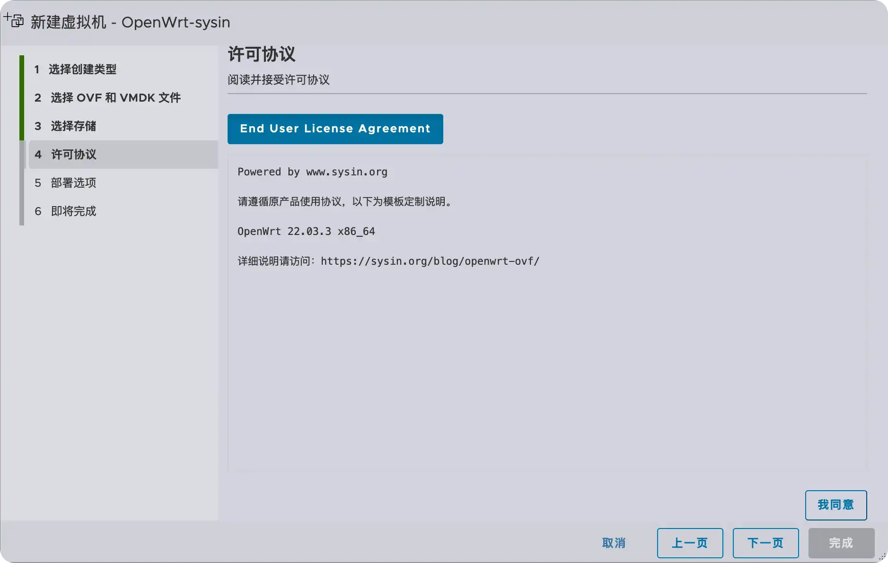
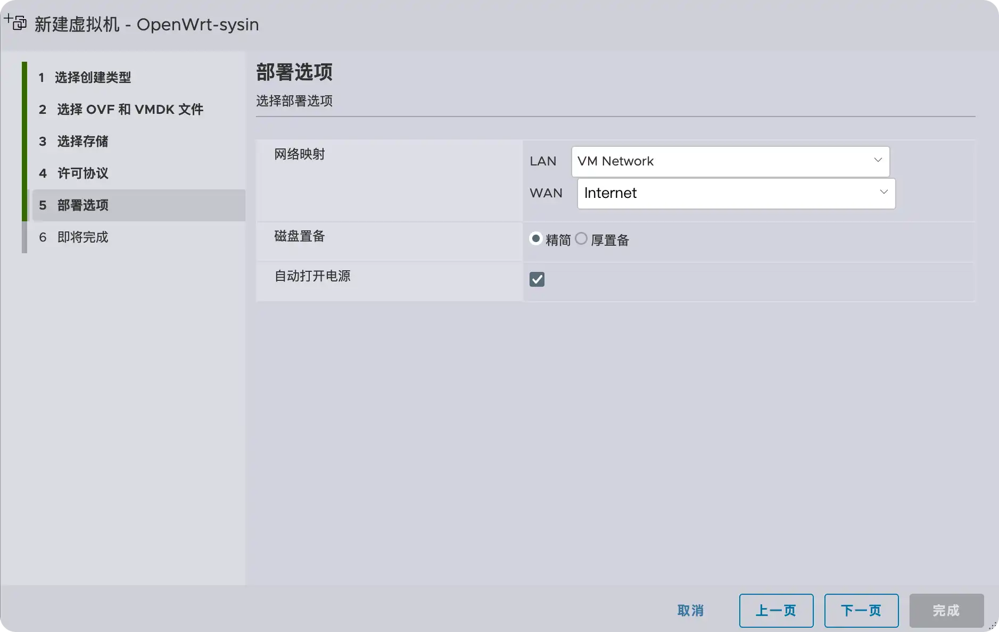

请访问原文链接：OpenWrt OVF：在 ESXi 8.0、Fusion 13 和 Workstation 17 上运行 OpenWrt 的简单方法 查看最新版。原创作品，转载请保留出处。
作者主页：sysin.org
这篇文章描述了如何将 OpenWrt 作为一个虚拟机运行在 VMware 虚拟化平台上，支持裸机硬件、macOS、Linux 和 Windows x86 平台虚拟化。
最近有读者朋友反馈说 OpenWrt 不支持在 ESXi 8.0 上部署，今天下载测试了一下，完全没有问题，搜索了一下，网文似乎用了一些复杂方法，感觉没有必要，还是直接使用 OVF 点下一步来的省事。
手动方法
1. 转换格式
OpenWrt 映像可以根据需要访问官网下载特定版本。本例基于当前稳定版 22.03。
然后解压，再通过 qemu-img 转换为 vmdk 格式。
1 | 命令示例： |
下面我们看看在 macOS 和 Linux 中具体操作：
1 | brew install qemu |
Ubuntu 24.04（OVF）/ Debian 12（OVF）：
1 | sudo apt update |
RHEL9 / AlmaLinux 9（OVF）/ Rocky Linux 9（OVF)：
1 | dnf makecache |
Windows？玩游戏好像不错，搞技术还是首选类 Unix 系统。
2. 创建虚拟机
现在开始部署，在 Fusion、Workstation 或者 vSphere 中新建虚拟机，客户端操作系统选择 Linux/Other Linux kernel 5.x 64-bit，SCSI 控制器默认 lsilogic 并添加 vmdk，网卡选择 Intel PRO/1000 Network adapters 即 e1000e。部署完毕，正常启动即可。
使用 OVF 部署
OVF 是最好的部署方式，直接上 OVF，只要点几次下一步。
默认使用了 2C/1G 的配置。

添加了两块网卡。

系统要求
因为当前 OpenWrt 22.03 基于 Linux Kernel 5.10，该 GuestOS 要求 VM hardware 版本 18 及以上。
更新 OpenWrt 23.05 基于 Linux Kernel 5.15，要求同上。
更新 OpenWrt 24.10 基于 Linux Kernel 6.6，要求 VM hardware 版本 20 及以上。
建议在以下版本的 VMware 软件中运行（Linux OVF 无需本站定制版可以正常运行，macOS 虚拟化如果不是 Mac 必须使用定制版才能运行，Windows OVF 需要定制版才能启用完整功能）：
- VMware vSphere：
- VMware ESXi 9 or with driver & vCenter Server 9 & VCF Operations 9
- VMware ESXi 8 or with driver & vCenter Server 8
- VMware ESXi 7 or with driver & vCenter Server 7
- macOS：VMware Fusion
- Linux：VMware Workstation for Linux
- Windows：VMware Workstation for Windows
下载地址
版本：全部为 x64 版本，适用于现代计算机，映像没有任何更改仅转换格式。
openwrt-22.03.3-x86-64
- openwrt-22.03.3-x86-64-generic-squashfs-combined.ova
只读 root 文件系统（可恢复出厂设置），BIOS 固件引导 - openwrt-22.03.3-x86-64-generic-ext4-combined.ova
EXT4 文件系统（读写），BIOS 固件引导 - 百度网盘链接：
[EoD]
openwrt-23.05.0-x86-64
- openwrt-23.05.0-x86-64-generic-squashfs-combined.ova
只读 root 文件系统（可恢复出厂设置），BIOS 固件引导 - openwrt-23.05.0-x86-64-generic-ext4-combined.ova
EXT4 文件系统（读写），BIOS 固件引导 - 百度网盘链接：https://pan.baidu.com/s/1IVs1qKQb0y3o4qdfIkJPlA?pwd=usvh
openwrt-24.10.0-x86-64 (release date: 2025-02-04)
- openwrt-24.10.0-x86-64-generic-squashfs-combined.ova
只读 root 文件系统（可恢复出厂设置），BIOS 固件引导 - openwrt-24.10.0-x86-64-generic-ext4-combined.ova
EXT4 文件系统（读写），BIOS 固件引导 - 百度网盘链接：https://pan.baidu.com/s/1ZvU7kz4NySZ6wQcI1ebBxQ?pwd=jhcf

文章用于推荐和分享优秀的软件产品及其相关技术，所有软件默认提供官方原版（免费版或试用版），免费分享。对于部分产品笔者加入了自己的理解和分析，方便学习和研究使用。任何内容若侵犯了您的版权，请联系作者删除。如果您喜欢这篇文章或者觉得它对您有所帮助，或者发现有不当之处，欢迎您发表评论，也欢迎您分享这个网站，或者赞赏一下作者，谢谢！
 支付宝赞赏
支付宝赞赏  微信赞赏
微信赞赏赞赏一下
敬请注册！点击 “登录” - “用户注册”（已知不支持 21.cn/189.cn 邮箱）。 请勿使用联合登录（已关闭）。